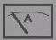
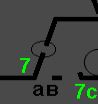
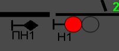
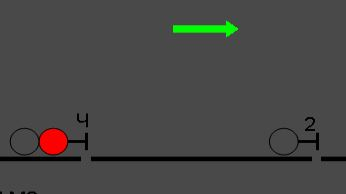
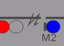
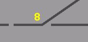

Стрелка красного цвета над перегоном указывает:
Амперметр имеет варианты индикации:
Разрыв пути обведенный кругом обозначает:
На светофоре Н1 красный сигнал, ПН1 в данный момент имеет следующее сигнальное показание:
Светофор 2 в данный момент имеет следующее сигнальное показание:
Зигзаг на пути обозначает:
Данный символ обозначает:
Стрелка 8 имеет:
КОК
ДСН
зС
НДСН
В
ГС
ГВ
ВТ
1КЧФ
1СПСЧ
АБТЦ
КПП
ПОН
14/14соАВ
Темно-зеленое обозначение пути
Сз
3Ф
Ночь
АПК
ЭО
БМ-1
ДУ